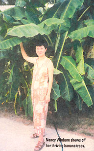
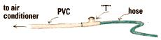

Three days after the photograph at right was taken, a drought was declared in our area. It was the driest summer in ten years. Even the grass around our banana trees was brown from the lack of rain. Yet our banana trees flourished.
In the past, we drained our air conditioner condensation into a hole filled with rocks to prevent pooling. This type of drainage would deprive the mosquitoes of a breeding area. I connected a garden hose to the drain and used it as a free-trickle watering system. Several of our trees did very well. However, our tuber garden surpassed my wife's expectations.
Much of the time, the hose was across our driveway. Parking the car on the hose would cause a backflow into the house. At the PVC-garden hose joint, I placed a tee with its free joint up. Should the hose ever crimp, the water would just flow among the flowers.
Donald Winburn
North Charleston. SC
|
 |
 |
|